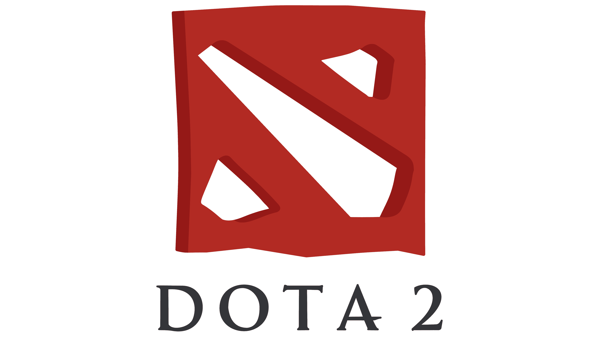

|
Counter Strike Global Ofensive Counter-Strike: Global Offensive, popularmente conocido como CS: GO, es un videojuego de estilo shooter, es decir de disparos en primera persona.
Es el cuarto juego de la saga Counter Strike, y desde su lanzamiento en 2012 ha atraído un promedio de 11 millones de usuarios por mes.
CS: GO se lanzó en Windows, OS X, Xbox 360 y Playstation 3, pero todos los profesionales juegan en PC. |
|  |
Defense of the Ancients 2 Dota 2 es un juego gratuito del género de estrategia de acción en tiempo real o, como también se le conoce, MOBA (Multiplayer Online Battle Arena) desarrollado por Valve y distribuido por la plataforma Steam.
Fue inicialmente un escenario personalizado para Warcraft III: The Frozen Throne llamado Defense of the Ancients (de donde viene el nombre Dota), creado con el Editor de Mundo que incluye dicho título. Sin embargo, el modo de juego se remonta varios años atrás, en concreto, a un mapa personalizado de StarCraft bautizado como Aeon of Strife. |
 |
Valorant Counter-Strike: Global Offensive, popularmente conocido como CS: GO, es un videojuego de estilo shooter, es decir de disparos en primera persona.
Es el cuarto juego de la saga Counter Strike, y desde su lanzamiento en 2012 ha atraído un promedio de 11 millones de usuarios por mes.
CS: GO se lanzó en Windows, OS X, Xbox 360 y Playstation 3, pero todos los profesionales juegan en PC. |
 |
Player Unknow Battle Grounds Counter-Strike: Global Offensive, popularmente conocido como CS: GO, es un videojuego de estilo shooter, es decir de disparos en primera persona.
Es el cuarto juego de la saga Counter Strike, y desde su lanzamiento en 2012 ha atraído un promedio de 11 millones de usuarios por mes.
CS: GO se lanzó en Windows, OS X, Xbox 360 y Playstation 3, pero todos los profesionales juegan en PC. |